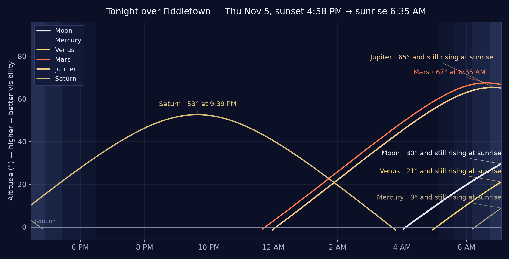

8:00 AM
– 10:00 AM
– 10:00 AM
Brewing Business in Amador
Thursday-morning business gathering in Jackson — the recurring series' final listed date on the Visit Amador calendar. Wrapped at 10:00 AM — carried here at evening for the record.
Thursday, November 5, 2026 · Evening Edition — published 5:30 PM PT
Thursday, November 5, at evening — the foothills close out a fair, quiet day: sunny, high near 66°, and no National Weather Service alerts in effect at the evening check. The roads close quiet too: Caltrans' 5:27 PM report lists no restrictions on SR-88, SR-49, or SR-124, and the CHP's live CAD board for the Stockton center, read at 5:28 PM, shows no incidents in the foothills — its four calls are all down in Stockton and Tracy. The day's two events have wrapped: the Jackson business morning ended at 10:00 AM, and the Amador Rail Explorers' last runs out of Ione came in at 5:30 PM. No weather event ran today, so there is nothing to close out but the daylight. Tonight turns mostly clear, low around 47°, clearing to fully clear after 11 PM — Saturn from dusk under a moonless sky, and the Taurids still throwing the odd fireball after midnight. Tomorrow is the week's fullest day yet: rail bikes again in Ione, lunch at Bella Grace in Plymouth, an Art Hop and a Christmas Boutique in Jackson, and opening night in Volcano.
Roads — all foothill highways clear at evening; the CHP board stays quiet for the foothills. Caltrans' evening report (5:27 PM) lists no traffic restrictions on SR-88, SR-49 in the central area, or SR-124 — SR-49's only listed work remains one-way controlled traffic far north in Nevada and Sierra counties, outside the beat. The CHP's live CAD Traffic board (Stockton center), read at 5:28 PM, shows 4 incidents, none of them in the foothills — two no-injury collisions on I-5 in Stockton, a traffic hazard on SR-99 at Cherokee Lane in Stockton, and a collision on I-580 in Tracy. Nothing on SR-49, SR-88, SR-124, or SR-16, and nothing in Fiddletown, Plymouth, Jackson, or Sutter Creek. The day closes with foothill driving dry and unrestricted, start to finish.
Weather — no alerts; a sunny day done, a mostly clear night ahead. No NWS alerts are in effect for the Fiddletown area at the 5:26 PM check — no warnings, watches, or advisories (alerts feed verified empty at press time). Today was sunny with a high near 66°. Tonight is mostly clear with a low around 47° — a little early-evening cloud eases to mostly clear by 9 PM and clear after 11 PM. No weather event ran today; there is nothing to close out. Tomorrow is mostly sunny with a high near 68°, and the fair run holds through the weekend (Saturday and Sunday sunny at 72°), with the week's first hint of rain not until a slight chance late Tuesday night.
Fire weather — no concerns. Light winds and a clear, cool night ahead; no Red Flag Warnings. Burn-day status: the paper does not state it — the recorded Burn Day Line in the rail (updated daily 4–5 PM) is the authority; call before lighting any outdoor fire.
Today in the foothills at evening: both of the day's events have wrapped, and the paper turns to a full Friday. The events desk carries no isPublic items in the beat for Thu Nov 5 (its Nov 5 public items are in San Francisco and Petaluma and online — none in the beat, none printed) and one for tomorrow (Rob's Food Friday in Plymouth, carded below). The evening sweep of the public calendars, all read live: Visit Amador lists the same three entries for today — the two event cards below plus the museum note — and two for tomorrow (the rail bikes and the museum, carded and noted below); Amador Wine Country lists 0 events for Nov 5–6 (its next listing is Sun Nov 8), Best of Amador has no live Nov 5–6 listing the desk could read this evening (its finds in The Week Ahead were checked Nov 4), and events.lodedown.com (Amador) shows nothing for Nov 5 and two Jackson events for Fri Nov 6 (both carded below). Count for the record: desk items in the beat today, 0; calendar finds today, 2 (both wrapped); standing listings noted, 1 — with a conflict flagged. Tomorrow: desk items in the beat, 1; calendar finds, 4 — plus the museum again, which tomorrow finally agrees with itself.
Thursday-morning business gathering in Jackson — the recurring series' final listed date on the Visit Amador calendar. Wrapped at 10:00 AM — carried here at evening for the record.
📍 Rail Explorers Amador Staging Area — parking & check-in: 702 Hunter Lane, Ione
Rail-bike runs out of the Amador staging area, running Thu–Sun this week, 8:00 AM–5:30 PM each day. Wrapped at 5:30 PM — the last runs came in as this edition went to press. The rail bikes run again tomorrow.
Standing listing — with a conflict the paper won't hide: the Amador County Museum, 225 Church St, Jackson, was listed today at 11:00 AM – 3:00 PM on Visit Amador — but the museum's own description on the same page says it is open Fridays, Saturdays, and Sundays, and today is a Thursday. The listing looks like a recurring entry the calendar surfaces daily. Call before you drive: (209) 257-1485.
Tomorrow — Friday, November 6
📍 Rail Explorers Amador Staging Area — parking & check-in: 702 Hunter Lane, Ione
The rail bikes run again Friday — and on through the weekend (Thu–Sun, 8:00 AM–5:30 PM each day), under a mostly sunny sky, high near 68°.
📍 Bella Grace Vineyards, Plymouth
Chef Rob cooks lunch in the wine cave, with a wine pairing and a view across the vineyard. Lunch is $5 for club members and $10 for everyone else.
📍 Central Valley Training Center, Jackson
A Friday late-morning art gathering in Jackson, on the Amador community calendar.
📍 Grace Fellowship Church, Jackson
Friday-evening boutique in Jackson — and it returns Saturday, Nov 7, 10:00 AM–3:00 PM.
📍 Cobblestone Theatre, Volcano
Opening night of the Volcano Theatre Company holiday comedy ($24), which runs through Dec 13.
Standing listing — tomorrow it lines up: the Amador County Museum, 225 Church St, Jackson, is listed again tomorrow, Fri Nov 6, at 11:00 AM – 3:00 PM — and Friday is one of the days its own description names (open Fridays, Saturdays, and Sundays), so tomorrow's listing carries no conflict. Its phone: (209) 257-1485.
Today, Thu Nov 5 — wrapped: Brewing Business in Amador (8:00–10:00 AM, 215 N. Main St, Jackson) and the Amador Rail Explorers (8:00 AM–5:30 PM from the Rail Explorers Amador Staging Area, check-in in Ione) both ran and finished; the rail bikes run again Fri–Sun. See Today in the Foothills, above.
Fri Nov 6, 11:30 AM–2:00 PM — Rob's Food Friday, Bella Grace Vineyards, Plymouth. Chef Rob cooks lunch in the wine cave, with a wine pairing and a view across the vineyard. Lunch is $5 for club members and $10 for everyone else.
Fri Nov 6, 11:00 AM–1:00 PM — Art Hop, Central Valley Training Center, Jackson; 6:00–8:00 PM — Christmas Boutique, Grace Fellowship Church, Jackson (the boutique returns Sat Nov 7, 10:00 AM–3:00 PM); and 7:30–9:30 PM — On The Farce Day of Christmas (opening night), Cobblestone Theatre, Volcano ($24; the Volcano Theatre Company holiday comedy runs through Dec 13).
Sat Nov 7, 9:00 AM–12:00 PM — Vermicomposting: Building Your Own Worm Bin, GSA Building, Jackson; 1:00–3:00 PM — Candy Cash Out, First 5 Amador, Jackson (kids trade leftover Halloween candy for games and prizes); and 6:00–9:00 PM — Italian Benefit Society Shrimp Feed, Italian Picnic Grounds, Sutter Creek ($40).
Sat Nov 7, 11:00 AM — Fair Play Harvest Festival, Golden Leaves Vineyard & Winery, Somerset. Billed as the Fair Play event of the year; proceeds support the Fair Play Winery Association. Note: the winery's newsletter gives the festival's dates two ways (Nov 6–7 in its text, Nov 7–8 in its heading) — check Golden Leaves before you drive.
Sat Nov 7, 4:00–9:00 PM — Ghosts of the Gold Rush World Premiere, Kennedy Gold Mine, Jackson. General admission $40, VIP $100.
Sat Nov 7, 5:15 PM — Peace Officer & Citizen of the Year Awards Banquet, American Legion Hall, Sutter Creek. $45; tickets in advance only, none at the door.
Sun Nov 8, 11:00 AM–5:00 PM — Art & Wine Stroll in Sutter Creek, Main Street, Sutter Creek. Six tasting rooms turn into galleries for the day; at Bella Grace's tasting room, meet painter Ron Antone and taste the 1646 Red Blend with a Tuscan squash soup. Tickets are $40. Also Sun Nov 8, 3:00–6:00 PM — Three for Silver (live music), 15950 Highway 49, Drytown.
Tue Nov 10, 5:00–10:00 PM — Marine Corps Birthday Ball, Castle Oaks Golf Course, Ione. $50 adults, $25 children. And Wed Nov 11, 10:00 AM — Veterans Day Parade, Jackson. Free.
🏛️ Fiddletown Community Center
Under the Big Fiddle
Home of the giant fiddle on the roof — and of half the town's calendar. fiddletowncc.org →
Three dates to circle at the hall this month — all three came in on flyers from the Center, via Nan:
Ping pong, corn hole, darts, board games, backgammon, and Mexican Train — bring a board game to share. Contact: Becky · info@fiddletowncc.org.
Turkey, ham & gravy provided; bring a side or dessert. Raffle of 25+ items.
Free dance instruction 6:15–7 PM (Dave and Alecia West), then the show at 7 PM. $20 advance / $25 door. Questions: Bob Hines · info@fiddletowncc.org.
⭐ From California — a Californian elected President, 1968: on this day, Tuesday, Nov 5, 1968, Republican Richard M. Nixon — born in Yorba Linda, raised in California, and the state's former U.S. Senator — defeats Vice President Hubert Humphrey in one of the closest presidential elections in U.S. history. The same day, Shirley Chisholm of New York becomes the first Black woman elected to Congress. The editor dug back to 1848 for this date in our hills, as the publisher directed: no verified Fiddletown or Amador event falls on Nov 5 in the Gold Rush years or since that the desk could confirm — so today's highlight is California's own on the national stage, labeled as such. (One near-miss the desk would not stretch: the Lancha Plana Dispatch moved to Jackson and took the Amador Dispatch name sometime that November of 1860 — no source pins it to Nov 5, so it does not run as a Nov 5 item.)
1872 — Susan B. Anthony votes. In Rochester, New York, Anthony and 14 other women cast ballots in the presidential election — 48 years before the 19th Amendment gave women the vote nationwide. She was arrested two weeks later, convicted, and fined $100, which she famously never paid.
Nov 5 is an Election Day date: Woodrow Wilson is elected in a four-way landslide in 1912 (435 electoral votes to Theodore Roosevelt's 88 and President Taft's 8), and Franklin D. Roosevelt wins an unprecedented third term in 1940.
Wider page: 1605 the Gunpowder Plot is foiled — Guy Fawkes found guarding the gunpowder under Parliament ("Remember, remember, the fifth of November") · 1994 former California governor Ronald Reagan releases a handwritten letter announcing his Alzheimer's diagnosis — the same day George Foreman, at 45, becomes boxing's oldest heavyweight champion.

Tonight's chart (~8 PM, facing south): Saturn owns the evening again — about 46° up in the southeast at 8 PM and peaking at 53° around 9:39 PM. The Great Square of Pegasus rides high overhead, Cassiopeia climbs in the northeast, and Taurus — the Taurid radiant — rides the east through the evening. The evening is moonless — the Moon doesn't rise until 4:10 AM.
🌒 Moon: waning crescent, about one-tenth lit (~10%) — past last quarter (Nov 1) and thinning toward the Nov 9 new moon. It sets at 2:55 PM today and rises at 4:10 AM, so the whole evening is properly dark.
Planets up: Saturn takes the evening — high in the south all evening, setting about 3:45 AM. Mars rises about 11:45 PM and Jupiter about 12:10 AM, both brilliant before dawn. Venus is a pre-dawn object only, rising about 5:05 AM. Mercury is below the horizon at sunset — not an evening target tonight.
Notable — the Southern Taurids, one night past peak: the stream peaked last night (Nov 4–5) and is still active tonight — the slow, bright "fireballs" from Comet 2P/Encke's debris, at modest rates (about 5–10 meteors an hour under dark skies, per the American Meteor Society) with occasional fireballs brighter than Venus. Best hours are around and after midnight, when Taurus rides high. The Northern Taurids build toward Nov 11–12, and the Orionids wind down through Nov 7.
Viewing note (honest): the best sky of the week, confirmed at evening — the 5:26 PM NWS check holds tonight mostly clear with a low around 47°, and the hourly picture improves as the night goes: a little cloud early in the evening, mostly clear by 9 PM, and clear after 11 PM. After last night's cloudy peak, tonight is the consolation prize, and it's a good one: Saturn from dusk under a moonless sky, and Taurid fireball-watching after midnight, with the sky at its clearest exactly then. Dress warm — the upper 40s by the small hours.
The desk is listening. On the Wing carries the foothills' bird sightings — photos, footage, and field notes, town name only, as always. Pieces fly the front page for four days, then retire to the archive, where every published sighting stays on the record.
Our first sighting — a red-shafted Northern Flicker filmed on a Fiddletown deck on Halloween morning — has retired to the archive on schedule: 📚 The Sightings Archive.
Send yours: a photo or a few lines through the Suggestion Box below, and the desk will do the rest.
The ballot is closed, and the desk has a name: The Wild Side. The reader ballot that opened Oct 31 closed today, Thu Nov 5, under the desk's standing close rule — no new ballots arrived by the deadline (the final check ran this morning; the count never moved after Nov 2). The final tally stands tied, The Wild Side 1 · Who Goes There? 1, two votes counted — and under the publisher's Nov 2 ruling, the desk takes the name of his original vote: The Wild Side. The ballot block and vote chart come out of the paper today, as the ruling directed; the Editor thanks the foothills for voting, all two of you, and notes the tie was broken the way ties around here usually are — by the fellow who owns the press, voting first.
The foothills are full of neighbors who don't read the paper: deer in the garden, turkeys in the road, the occasional bobcat acting like it pays taxes. This desk carries their sightings — photos, footage, and field notes, town name only, as always.
Front-page retirements today: the desk's two Nov 1 sightings — the doe ("The Morning Visitor") and the western gray squirrel ("Breakfast, Held in Both Paws") — retire from the front page on the paper's four-day rule. Both stay on the permanent record in the 📚 Sightings Archive.
Sightings are open: send yours through the Suggestion Box below — every logged sighting joins the Sightings Archive.
The Gazette has a correspondent. Nan Dell'Aquila writes this corner — dispatches, notes, and observations from her side of the foothills — filed by email and printed under her byline, as she sends them. (Her cooking lives in Nan's Recipe Corner, over in the rail; this corner is for everything else.)

Nan's second filing of the day swaps the oven for the cocktail shaker: a Bourbon Maple Old Fashioned, straight from her recipe card — bourbon, maple syrup, and bitters, shaken twenty times and poured over one big cube. It runs in full in Nan's Recipe Corner, photo included and tappable to the original, per her standing request.

Nan's first piece for the paper arrived the way her best things do — no preamble, just the goods: a link to her recipe card for Pecan Pie Brownies. It runs in full in Nan's Recipe Corner, over in the rail. Welcome to the masthead, Nan.
Retired today: Nan's Chicken Parmesan Rolls piece (Nov 1) leaves the front page on the paper's four-day rule for contributed pieces. The recipe itself is not going anywhere — it stands in Nan's Recipe Corner in the rail and on the permanent record in the Recipe Archive.
Today's joke: Why did the student eat his homework? …Because the teacher told him it was a piece of cake.
Yesterday's riddle: What has a head and a tail, but no body? — Answer: A coin.
Today's riddle: What runs all around a backyard, yet never moves?
📬 Get the joke by mail — join The Joke Vault. The Gazette's jokes have a sister act: one joke and one riddle by email, every day. Two doors in:
• The form: sign up in one field on The Joke Vault's homepage.
• By email: send a message with the subject “Joke Vault JOIN” to dave@dellaquila.com — tap that link and the subject fills itself in.
Feedback, comments, corrections, and story tips for this edition — all welcome. Tell us what the paper got right, what it missed, and what it should cover next.